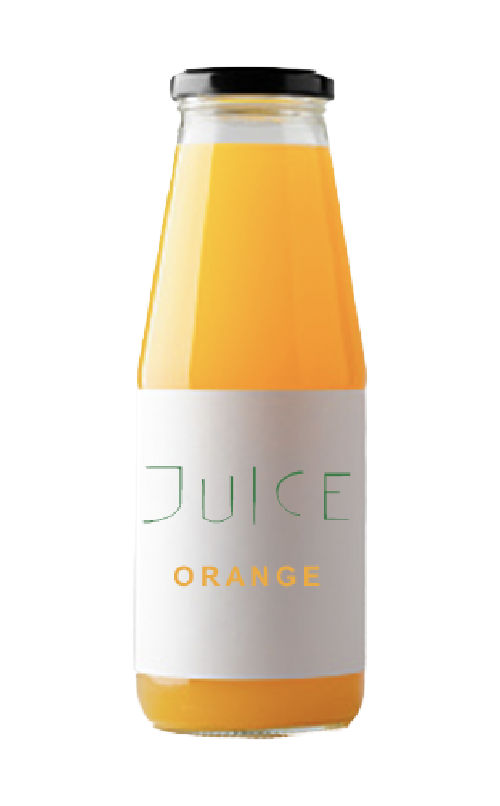
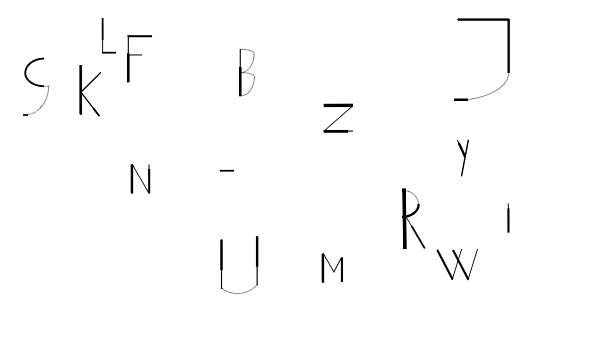

Bogstaverne er formet med en blanding af tykke og tynde streger - på den måde fik jeg et skrøbeligt og ubalanceret look
Hvad?
F
O
N
T


Proces
Fonten er designet i illustrator, bygget med Calligraphr og derefter implementeret på sitet via CSS